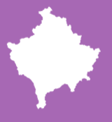
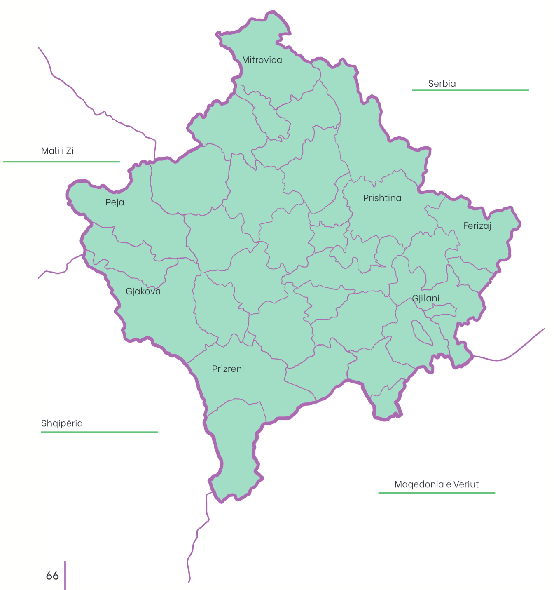

Vendi ku jetoj
Fqinjët e Kosovës
1.
Shihni hartën e vendit tonë. Diskutoni në klasë për shtetet me të cilat kufizohet Republika e Kosovës.

Qytetet
- Mitrovica
- Peja
- Gjakova
- Prizreni
- Prishtina
- Ferizaj
- Gjilani
Shtetet fqinje
- Mali i Zi
- Shqipëria
- Serbia
- Maqedonia e Veriut